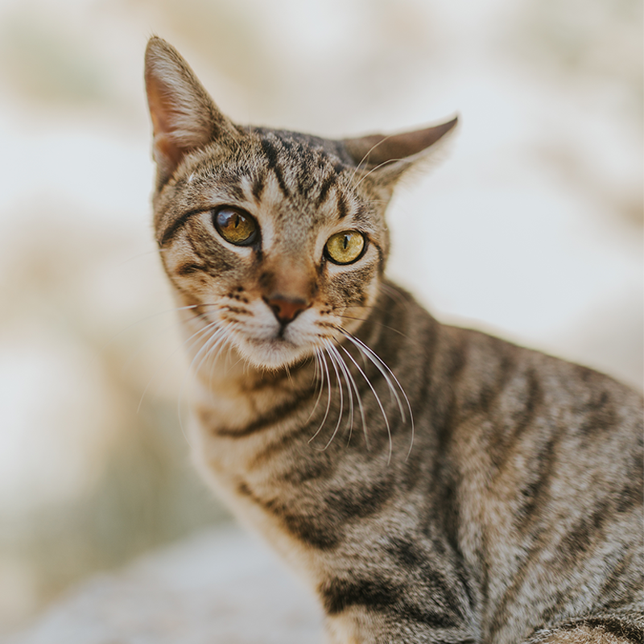

Hope Starts With a Home
Twin Cities Animal Rescue connects animals in need with safe, loving homes and gives community members meaningful ways to help.
Whether you are considering adoption, fostering, volunteering, or donating, your support can make a lasting difference.
Our Mission
We work to provide compassionate care, increase adoption opportunities, and build a community where every companion animal has a chance to thrive.
Our Impact
- Hundreds of animals supported through rescue and foster care each year.
- Volunteers provide daily enrichment, transportation, and outreach.
- Community partnerships expand resources for pets and their families.
How You Can Help
Adopt an animal, open your home as a foster family, volunteer your time, or connect with us about other ways to support local animal welfare.
Explore volunteer and foster opportunitiesPet Spotlight

Featured Rescue Story

Our rescue team combines practical care with personal attention so that animals can move toward their next chapter.